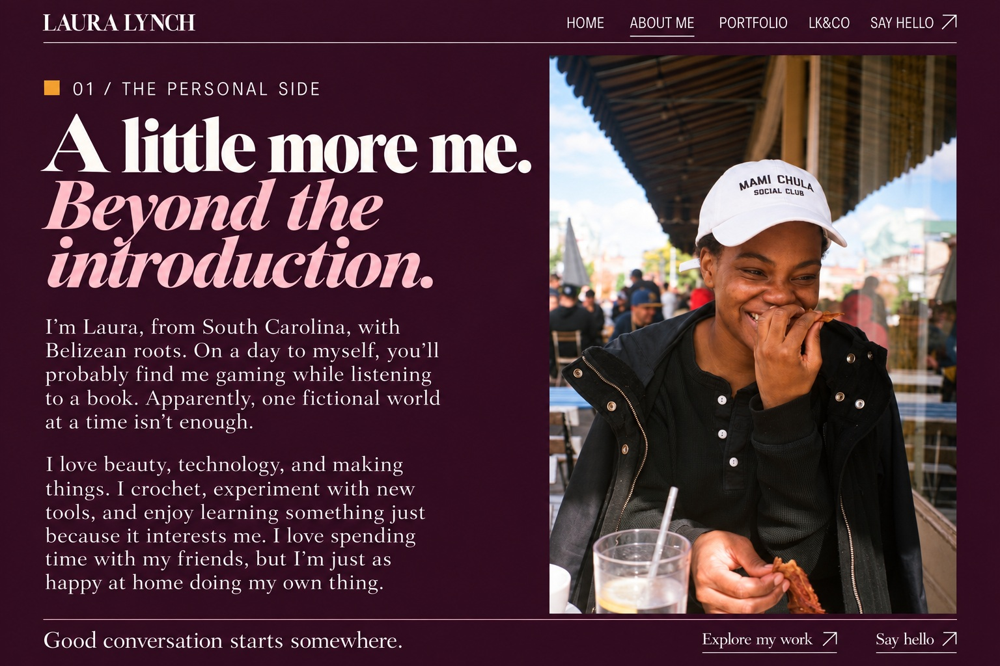

01 / The personal side
A little more me.
Beyond the
introduction.
I’m Laura, from South Carolina, with Belizean roots. On a day to myself, you’ll probably find me gaming while listening to a book. Apparently, one fictional world at a time isn’t enough.
Beauty, technology, and making things are all part of my life. I crochet, experiment with new tools, and enjoy learning something just because it interests me. Time with friends matters to me, but I’m just as happy at home doing my own thing.
